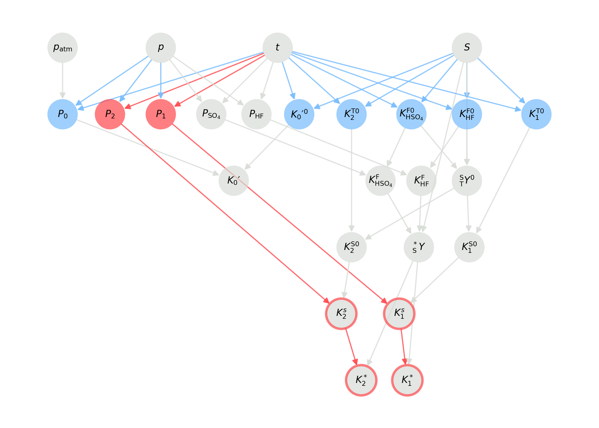

PyCO2SYS v2 beta
These are the docs for the beta release of PyCO2SYS v2!
If you're here to test it, then thank you! and please report any issues via the GitHub repo.
These instructions will not work for the current version 1.8 that can be installed through pip and conda - please see PyCO2SYS.readthedocs.io for documentation for the latest stable release.
Validity range checker¶
PyCO2SYS includes a tool to check whether arguments such as temperature, salinity and pressure fall within the valid ranges required by the parameterisations used internally to calculate equilibrium constants and other marine carbonate system properties.
Many of these validity ranges are poorly constrained or unknown, so the validity ranges will likely be updated in the future.
Recording validity¶
The validity checker can be best thought of as a test of whether any values are definitely invalid; if no problems are flagged up, then that's not a guarantee that the value is valid.
import PyCO2SYS as pyco2
co2s = pyco2.sys(t=[10, 20, 30], s=np.vstack([0, 35])) # Set up a CO2System
co2s.check_valid(ignore=None, nan_invalid=False)
Once it's been checked, (in)validity is stored in the valid attribute of the CO2System. This is much like the uncertainty attribute, i.e., a dict where keys can also be accessed with dot notation and using shortcuts. For example:
co2s.valid.total_borate
>>> [[1],
[0]]
co2s.valid.pk_H2CO3
>>> [[2, 2, 2],
[0, 0, 2]]
The values in these fields use an additive binary system, where
0= no reason to be invalid,1= one or more of the arguments are out of their valid range,2= one or more of the arguments were themselves invalid (inherited invalidity).
So where both 1 and 2 are true for a parameter, it will be assigned with a 3.
In the example above, the first total_borate value is invalid because one of its inputs was out of the valid range. The find this, check valid.parts:
co2s.valid.parts.total_borate
This returns a dict containing a logical array for each argument to the total_borate function that has a defined valid range, in this case, only salinity. The logical is True where the salinity values fall within the defined range, and False where they are invalid, either because they are out of range or because they have inherited invalidity from an earlier calculation step.
Visualising validity¶
Once a CO2System has been created with pyco2.sys, it needs to be solved for whichever parameters are to be checked using the solve method, with store_steps=2 in order for the validity visualisation to work properly. Then, use the plot_graph method to view the results:
co2s = pyco2.sys()
co2s.solve(store_steps=2) # Solve for all parameters
co2s.plot_graph(mode="valid")
Appearance may change
The exact appearance of the validity graph generated by plot_graph may be adjusted in any future release. The description below will be kept up-to-date for the currently released version of PyCO2SYS.
The output graph may look like the following:

Here, each parameter is represented by a circle.
The fill colour indicates the direct validity status of the parameter. This means whether all of the arguments required to calculate the parameter fall within their valid ranges:
- Blue: all arguments are in their valid ranges (e.g., \(P_0\)).
- Red: at least one argument is outside its valid range (e.g., \(P_1\) and \(P_2\)).
- Grey: valid ranges not defined for this parameter (e.g., \(p\), \(t\) and \(S\)).
The arrow colours show exactly which parameters are inside (blue, e.g. \(t\) for \(P_0\)) or outside (red, e.g. \(t\) for \(P_1\) and \(P_2\)) their valid ranges, or which do not (yet) have validity ranges specified (grey, e.g. \(t\) for \(P_\mathrm{HF}\)).
If a parameter is invalid (e.g., \(P_1\) and \(P_2\)), then all other parameters it is used to calculate are also considered indirectly invalid. This is shown with red arrows and a red border around the indirectly invalid parameter (e.g. \(K_1^*\) and \(K_2^*\)).